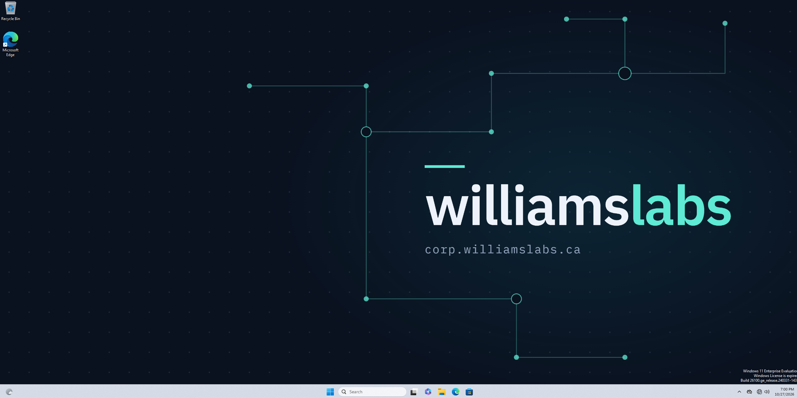

A Group Policy Object sets a company wallpaper for domain users in the corp.williamslabs.ca lab, served from a read-only share on the domain controller.
| Component | Detail |
|---|---|
| Domain | corp.williamslabs.ca |
| Domain controller | AD-01, Windows Server 2022, 10.10.20.50 (server VLAN) |
| Test user | tuser1 |
| Policy | User Configuration > Desktop > Desktop Wallpaper |
| Image location | \\AD-01\Wallpaper\WilliamsLabs Background.png |
The wallpaper must live on a path every client can read, so it sits on a share on AD-01 rather than a local folder.
Run in an elevated PowerShell on AD-01:
New-Item -Path "C:\Wallpaper" -ItemType Directory New-SmbShare -Name "Wallpaper" -Path "C:\Wallpaper" -ReadAccess "Domain Users","Domain Computers" -FullAccess "Administrators"
Share permissions and NTFS permissions are both checked, and the stricter one wins. Read access was granted explicitly on the folder:
icacls "C:\Wallpaper" /grant "Domain Users:(OI)(CI)R" "Domain Computers:(OI)(CI)R"
icacls confirmed CORP\Domain Users and CORP\Domain Computers hold (OI)(CI)(R). The folder also inherited BUILTIN\Users create rights from C:\. The share is read-only, so this is low risk, and it can be removed with icacls "C:\Wallpaper" /inheritance:d followed by /remove "BUILTIN\Users".
gpmc.msc, create a GPO in the Group Policy Objects container, or create-and-link directly on the OU that holds the user accounts.\\AD-01\Wallpaper\WilliamsLabs Background.png, style Fill.gpupdate /force completed and the wallpaper applied for the domain user after signing out and back in.
gpresult /r /scope user on the client confirms the policy came from the domain controller:
| Item | Result |
|---|---|
| User | CORP\tuser1, in OU=Corp Users |
| Policy applied from | AD-01.corp.williamslabs.ca |
| Applied GPOs | Corp Users - Baseline, User - Desktop Wallpaper |
| Filtered out | Local Group Policy (empty, expected) |
| Slow link | No |
